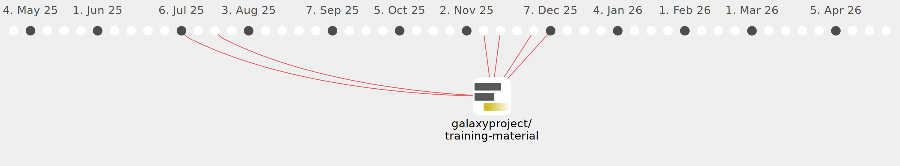

katherine-d21

Commits all-time: 109
Commits last year: 101

(55)
- 26ece04
- 43da516
- 4bc4310
- 068e6a1
- ca7c36b
- e14c3fc
- 8aaf681
- 847d0ca
- f44ad53
- 288eba8
- 5be5ed9
- f48826e
- cb404d6
- fe2a5e5
- 7eb14b2
- b19780d
- ff05d6d
- ede7d43
- 70baefc
- 2b101aa
- 403409b
- fa5f047
- d8ccd8c
- 71b5869
- 8f954f9
- faf0345
- a9e71ee
- 963caf4
- 7937ffb
- 383ce16
- 376132c
- 8bcda28
- 102b534
- 490bd7d
- 9882294
- 6fe0dc6
- 0642b31
- f093650
- 9cf0cd1
- 9550dff
- 2cb84bc
- 9d05063
- 77da7f5
- 353596b
- e31efac
- 01da820
- 0e0948f
- 0ecd347
- f00f176
- 651640a
- 44be067
- d476df4
- bfb761f
- 667082c
- a0f73c7
(46)
- 90f56b8
- 29dc3d6
- f719e43
- 320ca86
- 4fdc818
- 28da70d
- 9c04125
- 70622d6
- c488e65
- 20a3fa6
- dd80446
- 89b2c3c
- a586624
- af5bdf0
- 95439f8
- 593f84d
- 319117f
- 8cf35c0
- 281e106
- 315eb3a
- a7e4cad
- c1542af
- 7c29c2d
- 22506c9
- f25724c
- 86f23f2
- 30231f9
- 4172550
- bb71502
- e8cf070
- d51ed2b
- 67141b1
- 745b601
- 4757db8
- 27e33a7
- 8a0690b
- b3a55fa
- 3317a45
- b255431
- 6f53fdd
- 740e065
- acf6d45
- 8c71a74
- fd7f87e
- d453786
- aaa6b3a